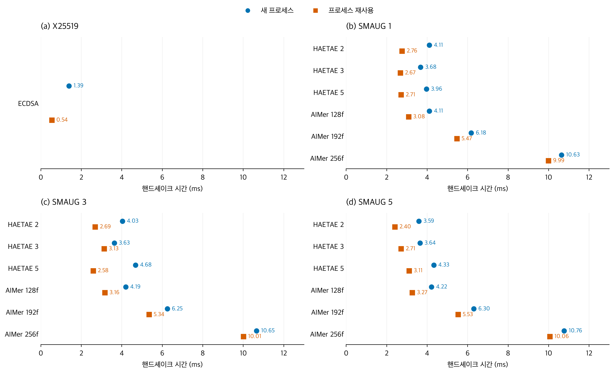
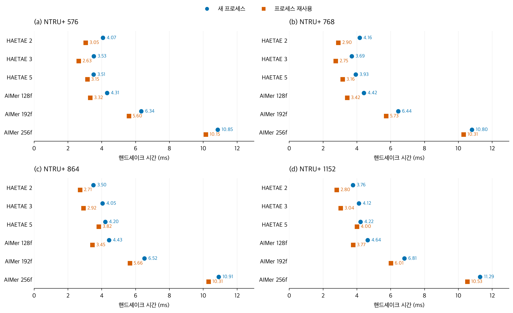
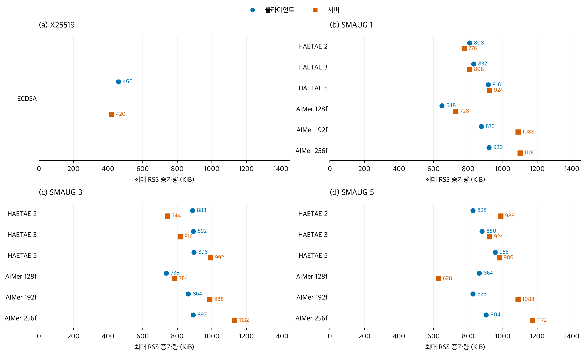
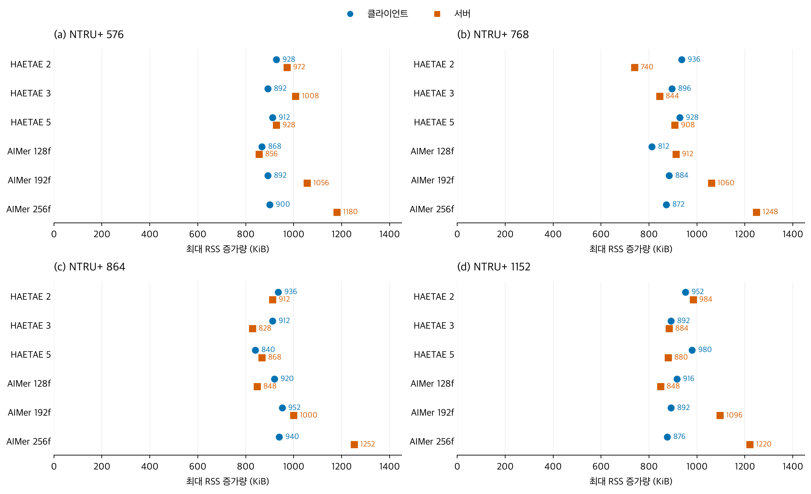
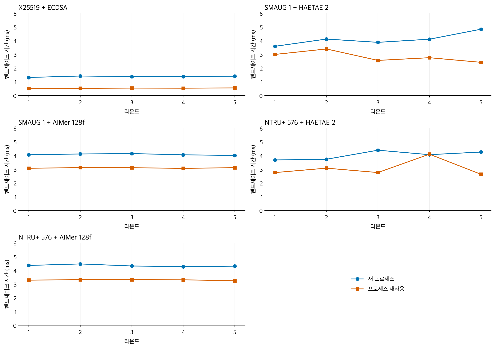

KPQC TLS 실험
환경·방법·결과는 README.md와 번호순 문서를 참조하세요. 각 그림 아래 링크로 영어 그림과 벡터 원본을 열 수 있습니다.
1. 기준선 및 SMAUG 핸드셰이크 지연

각 점은 구성별 15회 연결의 중앙값이다. English · SVG
2. NTRU+ 핸드셰이크 지연

각 점은 구성별 15회 연결의 중앙값이다. English · SVG
3. 기준선 및 SMAUG 최대 RSS 증가량

각 점은 별도 실행 3회의 중앙값이다. English · SVG
4. NTRU+ 최대 RSS 증가량

각 점은 별도 실행 3회의 중앙값이다. English · SVG
5. 라운드별 핸드셰이크 지연

각 점은 라운드 내 3회 연결의 중앙값이다. 두 모드는 별도 시간 구간에 실행했다. English · SVG

English architecture

English architecture